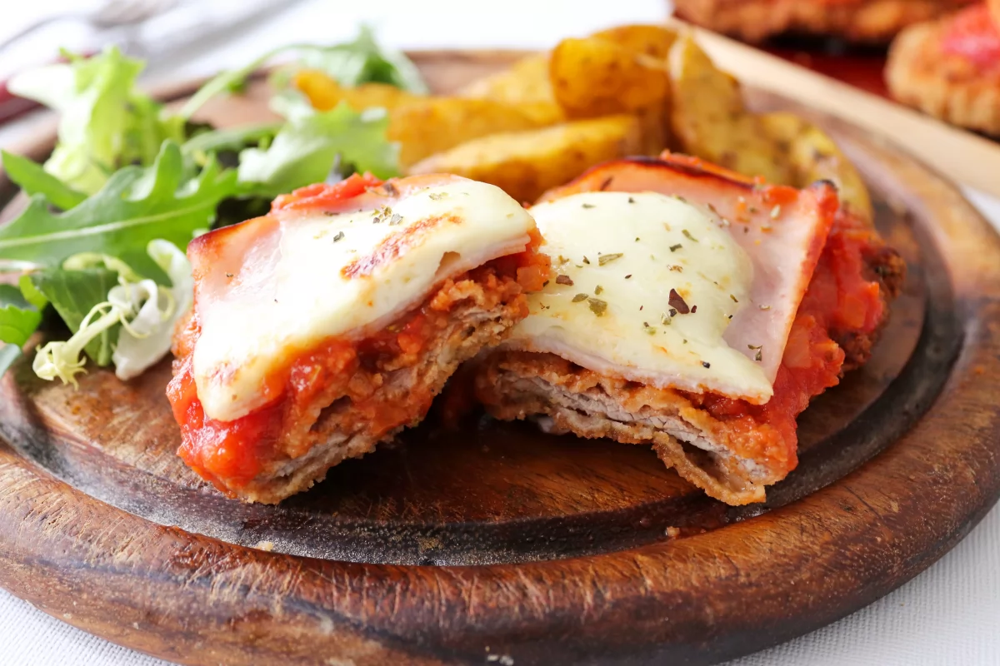

Milanesa Napolitana

Este es el plato caracteristico de nuestro territorio uruguayo
Ingredientes
- Un filete de carne de vaca o pollo empanado estilo milanesa
- Jamon cocido, 150 g
- Queso muzzarella, 150 g
- Salsa de tomate, 1 lata
- Aceite
- Sal a gusto
Preparacion
- Una vez empanada la milanesa, como vimos en nuestra receta generica de milanesas, durante 12 minutos en el horno a 180°, colocar en una asadera humedecida con una película de aceite mezcla o de girasol y darlas vuelta una vez para que se cocinen parejo
- Agregar toppings de jamon, queso y salsa de tomate.
Home